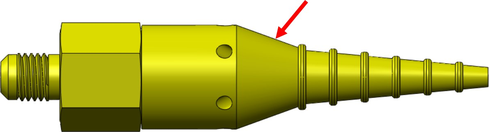
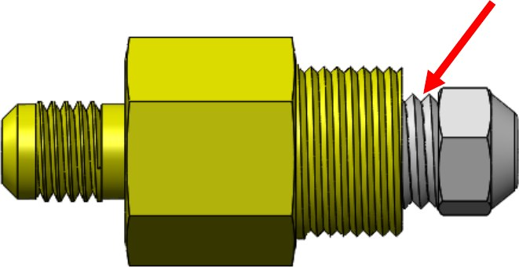
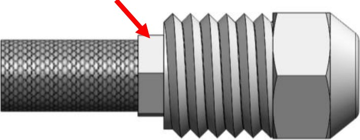
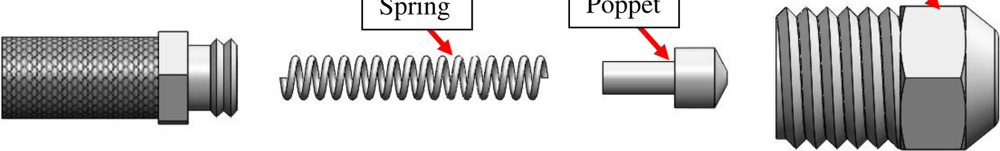
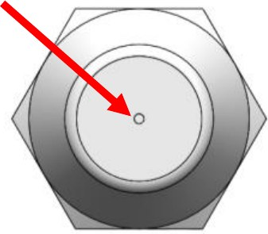
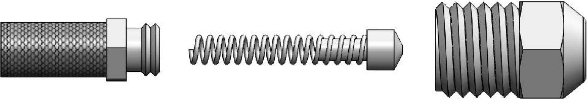
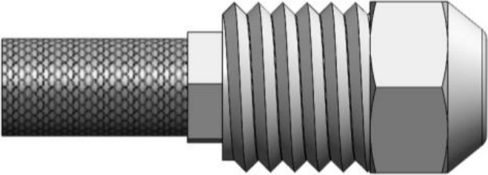
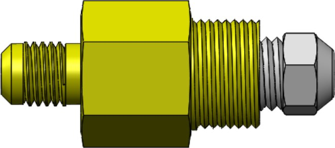

Doc no. MOC-TSB-18-17 // Vol. 18 No. 17 // Nov 1, 2018 // Fuel
Cleaning a Clogged Universal Turbo Misting Nozzle
Have you noticed the service time has increased while using the Universal Turbo Misting Nozzle? If so, there is a good chance the nozzle has become plugged. Follow the procedure below to disassemble and clean the nozzle. Use a 3/4in wrench on the hex fitting and a 7/16in wrench on the misting nozzle.
What's new
- Unscrew the cone of the adapter from the hex fitting connector, then unscrew the misting nozzle from the hex fitting connector.
- Unscrew the filter from the back of the misting nozzle.
- Remove the spring and poppet from the head of the misting nozzle.
- Clean the nozzle head: carefully spray parts wash into the head of the nozzle body, followed by a couple of quick bursts of shop air through the front of the nozzle. You should see light through the nozzle tip when it is clean.
- Reassemble the spring and poppet in reverse order from step 3, with the spring around the base of the poppet, and make sure the head of the poppet goes into the head of the nozzle.
- Screw the misting nozzle into the hex fitting by hand until tight, then tighten an additional 1 to 2 turns with a wrench.
Contact
For more information, contact the Machine & Equipment Department at 866.244.6621.







